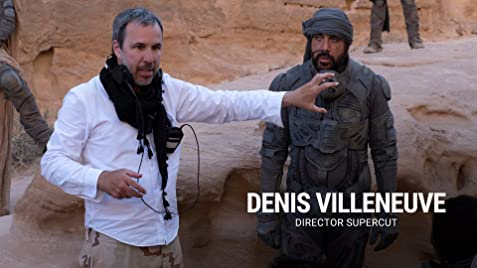

DUNE
Despre
DUNE, este bazat pe seria de romane cu acelasi nume scrise de Frank Herbert incepand cu 1965. Filmul acopera doar jumatate din primul roman, dar deja a fost anuntata partea a doua a filmului care continua povestea si daca lucrurile merg bine s-ar putea face chiar o trilogie. Povestea este una clasica, urmarind traseul eroului, in acest caz Paul Atreides. Intr-un viitor indepărtat, intr-un imperiu interplanetar, condus după reguli feudale, casele nobiliare se luptă pentru supremație. Casa Atreides primește controlul asupra planetei Arakis, singura sursă de mirodenie – cea mai valoroasă și importantă substanță din univers. Asta adancește vechea rivalitate dintre Casele Atreides și Harkonnen. Leto Atreides și familia lui se vor confrunta nu doar cu o planetă deșertică, neprietenoasă și necunoscută, ci și cu comploturi politice periculoase. Partea de comploturi politice este si motivul pentru care seria Dune este preferata mea.
Cartile
Dune (titlu original Dune) este o franciză science fiction care a debutat in 1965 cu romanul Dune al lui Frank Herbert. Considerat de mulți ca fiind cel mai bun roman science fiction al tuturor timpurilor, si unul dintre cele mai bine vandute romane science fiction din istorie. Herbert a scris cinci continuari, universul creat de el inspirand si o serie de jocuri video, dar si denumirea unor forme de relief de pe satelitul lui Saturn, Titan. Dupa moartea autorului, in 1986, fiul sau Brian Herbert a publicat impreuna cu scriitorul Kevin J. Anderson mai multe prequels si doua romane care completeaza seria, bazate pe notitele lui Frank Herbert.
Cartile originale sunt:
- Dune (Dune)
- Mantuitorul Dunei (Dune Messiah)
- Copiii Dunei (Children of Duen)
- Imparatul-Zeu al Dunei (God Emperor of Dune)
- Ereticii Dunei (Heretics of Dune)
- Canonicatul Dunei (Chapterhouse Dune)
Regizor
Denis Villeneuve nascut pe 3 octombrie 1967, Becancour, provincia Quebec, Canada, este un regizor, producător și scenarist de film canadian. La nivel internațional, este cunoscut pentru regia mai multor filme apreciate de critici, cum ar fi filmele de thriller Prisoners (2013) și Sicario (2015), precum și filmele SF First Contact (2016) și Blade Runner 2049 (2017). Pentru filmul First Contact, a primit o nominalizare la Oscar pentru cel mai bun regizor. In decembrie 2019, Hollywood Critics Association i-a decernat premiul Realizatorul deceniului. Regizorul a spus ca este fascinat de seria Dune inca din adolescenta, cand a avut un prim contact cu cartile.
Actori
| Nume | Data nasterii | Personajul din film |
|---|---|---|
| Javier Bardem | 1 Martie 1969 | Stilgar |
| Rebecca Ferguson | 19 Octombrie 1983 | Lady Jessica |
| Timothee Chalamet | 27 Decembrie 1995 | Paul Atreides |
| Zendaya | 1 septembrie 1996 | Chani |
Surse: